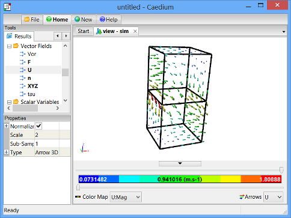

Internal Flow
Simulate internal flow by creating two boxes, stitching them together, and specifying the physical conditions for your simulation. Then view velocity vectors and particles tracks inside the volume.
Goals
In this tutorial, you will learn how to:
- Create a box
- Translate geometry
- Delete faces and stitch two pieces of geometry together
- Specify physical conditions for a simulation, in this case including the fluid inside the geometry and the properties of the outer surface of the geometry (walls, inlet, outlet)
- Specify meshing parameters
- Generate velocity vectors
- Generate particles tracks
Assumptions
- You have activated the Caedium Builder and Caedium Panel Flow add-ons, or Caedium Professional.
- You are familiar with Caedium essentials.
Create Two Boxes
Select the Geometry Tool Palette.
Select the Volumes->Box tool. Drag and drop the Box tool onto the View Window. Select Done to create a box.
Drag and drop the Box tool onto the View Window again. Double click sim in the Select dialog and select Done to create a second box.
Combine the Two Boxes into a Single Volume
To combine the 2 boxes into a single volume, you will first translate one of the boxes so that only one of its faces is coincident with the other box. You will then delete the 2 coincident faces of the boxes, and finally stitch the 2 boxes together to create a single volume.
To translate one of the boxes in the Z-direction, select the Transforms->Translate tool. In the Properties Panel set Translate to [0 0 10] and press Enter on the keyboard to apply the changes.
Drag and drop the Translate tool onto an edge of one of the boxes in the View Window. Double-click volume_1 in the Select dialog and select Done to translate the 2nd box 10m in the Z-direction.
In the Home Toolbar click the Fit-All button  so that you can see the 2 boxes in the View Window. To rotate the view, left-click-and-drag the mouse in the View Window until the boxes are in the approximate orientation shown below.
so that you can see the 2 boxes in the View Window. To rotate the view, left-click-and-drag the mouse in the View Window until the boxes are in the approximate orientation shown below.
To select the first coincident face to be deleted, right-click on one of the coincident edges, as shown below.
In the Select dialog, select face_8 or whichever face is the first coincident face. (See below for the face that should be highlighted.)
Click OK in the Select dialog and then select Delete from the menu to delete the first coincident face.
To select the second face to be deleted, right-click on the same edge again (as shown above) and then select face_3 (or again, whichever face is the second coincident face) in the Select dialog. Click OK and then select Delete from the menu to delete the second coincident face.
To stitch all of the remaining faces together into a volume, select the Volumes->Stitch tool, and drag and drop it onto the background of the View Window. Double-click sim->Faces in the Select dialog and then select Done from the menu.
Specify the Fluid Conditions
Select the Physics Tool Palette.
Select Gases->Air. The Properties Panel will show the default properties for air. To enable incompressible, irrotational, inviscid flow, set the 6 properties under State (Compressible, Heat Transfer, Rotational, Species, Transient, and Viscous) to No (if they are not set to No already).

Drag and drop the Air tool onto an edge of the volume. Select Done to set air as the fluid inside the volume.
Set the Properties of the Outer Surface of the Volume
Drag and drop the Faces->Wall tool onto an edge of the volume. Double-click volume_2->Faces in the Select dialog and select Done to create walls on the outer surfaces of the volume.
A wall is a solid surface through which fluid cannot flow.
To create an inlet, drag and drop the Faces->Inlet tool onto an edge of the face shown below. Select that face in the Select dialog (the edges of the face will be highlighted), click OK, and then select Done to create the inlet.

To create an outlet, drag and drop the Faces->Outlet tool onto an edge of the face shown above. Select that face in the Select dialog, click OK, and then select Done to create the outlet.
Specify Meshing Parameters
Select the Special->Accuracy tool. Verify that Low is selected for the Accuracy in the Properties Panel.
Drag and drop the Accuracy tool onto an edge of the volume. Double-click volume_2->Faces in the Select dialog and select Done to set the accuracy of the calculation.
Set the Reference Speed for the Simulation
The reference speed is required for internal flows because initially there is no obvious flow direction inside the volume. Caedium uses the reference speed to calculate pressure coefficients later in this tutorial.
Select the Volumes->Speed Reference tool. Notice that the Speed in the Properties Panel is set to 1m/s.
Drag and drop the Speed Reference tool onto the background of the View Window. Double-click on sim->Volumes in the Select dialog and select Done to set the reference speed as 1m/s.
Calculate the Velocity of Air Within the Volume
Select the Results Tool Palette.
Drag and drop the Vector Fields->U (velocity) tool onto an edge of the volume in the View Window. Double-click volume_2->Faces in the Select dialog and select Color Map to create contours of velocity magnitude on the inner surface of the volume.
Caedium will solve for the flow through the volume automatically and then display the contours.
To display velocity vectors, double-click the Vector Fields->U tool and select Arrows to create arrows colored by velocity magnitude on the inside surface of the volume.
To make the arrows larger, left-click on Arrows  in the View Legend. In the Properties Panel, set the Scale to 2 and press Enter on the keyboard to scale the arrows.
in the View Legend. In the Properties Panel, set the Scale to 2 and press Enter on the keyboard to scale the arrows.

View Particles Tracks Through the Volume
To see the particles tracks more clearly, you will first delete the velocity vectors from the box.
To delete the velocity vectors, right-click on Arrows in the View Legend and select Delete.
To delete the velocity magnitude contours, right-click on Color Map  in the View Legend and select Delete.
in the View Legend and select Delete.
To display particles tracks, drag and drop the Vector Fields->U tool onto an edge of the inlet in the View Window. Select the inlet face in the Select dialog, click OK, and select Set Particles Target. Right-click on an edge of the volume and double-click volume_2 to create particles tracks through the volume.
To color the particles tracks by pressure coefficient, double-click the Scalar Fields->Cp (pressure coefficient) tool and select Color Map. To rotate the view, left-click-and-drag the mouse in the View Window.
The pressure coefficient is a dimensionless number that represents pressure.
To change the style of the particles tracks, make sure that you have the inlet face selected in the View Window. Then go to the Properties Panel and set the Particles->Type to Tube to display the particles tracks as tubes instead of curves.
Try For Yourself
The sym project file for this tutorial can be viewed in Caedium or you can investigate this case yourself using our Panel Flow add-on.
The most convenient way to view and edit this case is to use our Professional add-on that combines all the add-ons used during this tutorial.
Feedback
Questions? Ideas? Problems?

Comments
Impressive achievement;
Impressive achievement; worth the 5 stars.
Nice work, sygirl && Caedium!
Nigel